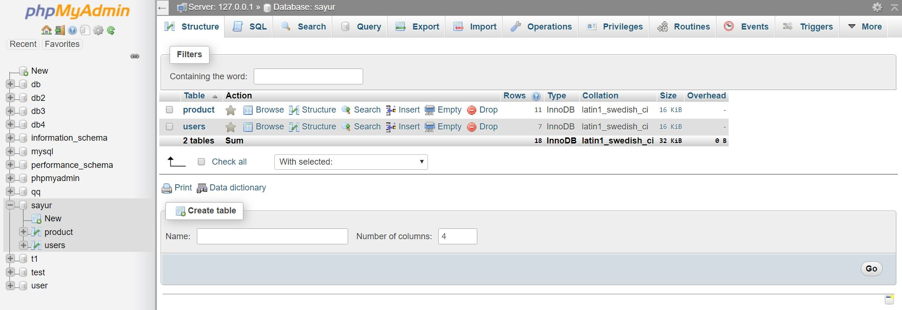

Website with Php
E-commerce shop: Sayur
For more info you can visit the site here: Sayur
This is a project that me and my groupmates have done as one of our assignments.
It is project done using HTML and PHP.
This project has allowed me to understand and gain knowledge on preparing a full stack development by using HTML for front-end
and PHP for back-end.
As seen above, the video portrays our user interface for customers to access and purchase products.
There is also another interface that allows the administration of the website to edit, insert and delete basically to
perform CRUD operations on the items registered in the website.

This project allowed me to understand the integration between the front-end and back-end.
We achieved an A for this subject by incorporating some javascript as well to enable the shopping cart function.